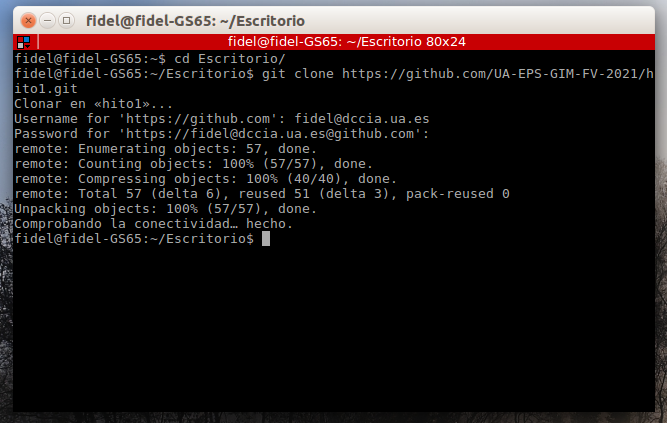
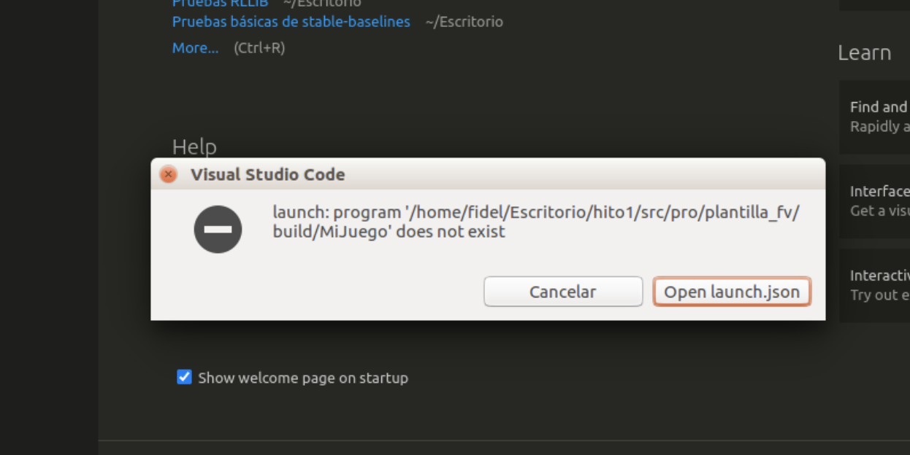

Documentación funcional de la plantilla del proyecto
- Documentación funcional de la plantilla del proyecto
- Sobre esta plantilla
- Git con VSCODE
- Plugins VSCODE
En este documento se presenta la documentación funcional del proyecto. La compilación de esta documentación (fichero .md) se ha realizado utilizando la extensión markdown-preview-enhanced de VSCODE.
ATENCIÓN. Se debe leer toda la guia antes de intentar hacer funcionar la plantilla. En otro caso es muy posible que algo no funcione, a lo que volveré a remitiros a esta guía...
Sobre esta plantilla
Introducción
Esta carpeta (proyecto) contempla todo lo necesario para desarrollar el proyecto de la asignatura FV, con lo que os debéis familiarizar con ella cuanto antes.
Se basa en el uso de herramientas libres, multiplataforma, para que podáis desarrollar cualquier proyecto con c++. Está configurada para poderse utilizar con VSCODE (recomendado) o desde línea de comandos.
La plantilla se debe obtener mediante el siguiente comando (¡¡¡no descargar en zip!!!): git clone <url_de_tu_repositorio>. De esa manera, en la carpeta proyecto tendremos todos los ficheros de la misma y toda la información del control de versiones:

El comando anterior creará la carpeta proyecto en el escritorio, que contendrá la plantilla.
Atención: la url de la imagen anterior NO será la vuestra, debeís obtenerla como se indica en el frontal de vuestro repositorio en github.
Estructura de carpetas
La estructura de carpetas la plantilla no se puede modificar, exceptuando el agregar más subproyectos dentro de la carpeta src/pro. Se pueden agregar los ficheros que se consideren necesarios con coherencia a la estructura:
.vscode: ficheros de configuración de vscode. Observa también el fichero del workspace (proyecto)proyecto.code-workspaceque está en/proyecto. Abrelo y determina para que sirve. Se trata de ficheros de texto que es conveniente observar y os tocará modificar para adaptar el proyecto a vuestras necesidades..git: información del control de versiones (no tocar)doc: documentación de vuestro proyecto en formato markdown. Se trata de un formato sencillo de marcado, usado por github y que utilizaremos para la práctica (si no lo conocéis dedicar 15' a leer sobre su uso). Solo se puede gastar este formato para documentar. Tal vez se solicite generar un pdf a partir de mismo (lo puede hacer VSCODE de manera sencilla).eval: ficheros markdown donde deberéis reflejar la autoevaluación de la práctica. Se indicará vuestro trabajo cuando correspondagest: ficheros de organización y gestión del proyecto. Incluye las tareas, el reparto de trabajo y el log diariootros: otros ficheros y subcarpetas que consideréis
La parte de implementación se encuetra en la carpeta src. Esta carpeta contendrá una subcarpeta por prototipo a desarrollar. En la entrega final debe contener exclusivamente en la rama principal el prototipo final del juego.
Cómo agregar nuevos subproyectos
El método más sencillo es el siguiente:
- Hacer un
git pullpara asegurar que tenemos la última versión del proyecto - Duplicar la carpeta de la plantilla con el nombre que queramos (la copia debe estar dentro de la carpeta
src/pro) - Agregar el nuevo subproyecto como workspace de VSCODE. Esto es requisito para poderlo compilar y ejecutar con facilidad. Para ello modificar el fichero
proyecto.code-workspacey agregar el subproyecto como se indica en el mismo. - Ahora debéis ver el subproyecto en el árbol de directorios. En las siguientes secciones se indicará como compilar un proyecto.
- Añadir la carpeta build del subproyecto en el fichero
.gitignore, ya que no queréis control de versiones de los binarios.
Compilar proyectos y subproyectos
La compilación se realiza mediante CMAKE->MAKE->GCC. CMake se encarga de generar un fichero make compatible con tu sistema que contenga las cuestiones relativas al proyecto. La información de como compilar el proyecto se encuentra concretamente en un fichero CMakeLists.txt. Por ejemplo, como compilar la plantilla se describe en proyecto/src/pro/plantilla_fv/CMakeLists.txt
Atención: Conforme añadas más ficheros fuente o librerias tendrás que editar el fichero CMakeLists.txt para que tenga constancia el CMake. No basta con agregarlos al proyecto.
Mediante línea de comandos
- Nos vamos a la carpeta del subproyecto a ejecutar, en nuestro caso la plantilla en
proyecto/src/pro/plantilla_fv - Botón derecho encima y
Open in integrated terminal. Eso abre un shell donde podemos trabajar cómodamente sin dejar el entorno - Ejecutar
./clean.shpara que se elimine la carpetabuild. Este paso es opcional y solo se debe hacer cuando empezamos la compilación después de sincronizar o bien cuando deseemos eliminar dicha carpeta, donde se encuentran los binarios del proyecto - Compilar con
./build.sh - Ejecutar el proyecto con
./build/nombre_binario. Cuidado, es posible que el proyecto requiera estar en el directorio./por tema de rutas, por ejemplo de imágenes.
Mediante VSCODE
- Seleccionar el subproyecto activo. Como vuestro proyecto puede contener varios subproyecto se debe seleccionar el que se desea compilar. Para ello pulsar
ctrl+shift+Ppara mostrar la consola de comandos. - Introducir el comando
cmake select active foldery ejecutarlo. Debeis seleccionar el proyecto a compilar. En nuestro caso vamos a compilar la plantilla, con lo que seleccionaremosPROT: plantilla_fv - Lo compilamos automáticamente mediante CMAKE mediante
ctrl+shift+Py el comandocmake build- Puede solicitar la versión del compilador. Debéis poneros TODOS deacuerdo con que compilador usar. El más moderno es CLang, pero no hay problema si queréis gastar GCC. Eso si: ¡todos el mismo y la misma versión!
- Lo ejecutamos en la pestalla run
ctrl+shift+D, seleccionando la opción que corresponda (launch o debug) y pulsando sobre la flecha verde (o la teclaF5)
Debug
Una vez compilado el proyecto vamos a la pantalla de run ctrl+shift+D y nos aseguramos que está selecionada la opción debug (gdb). Ahora podemos ir al fichero que queramos del proyecto (en el caso de la plantilla main.cpp) y pulsando en la parte izquierda de los números de línea agregamos los breakpoints deseados. Cuando ejecutemos el fichero (por ejemplo con F5) parará en la línea indicada y podremos ver el valor de las variables, ejecutar paso a paso...
¿Que pasa si me da este error?

Puede ocurrir por dos razones:
- Que no has compilado el proyecto. Ves a la sección anterior de como compilar un proyecto.
- Que el ejecutable que genera CMAKE no se llama como esperas. En ese caso verifica como se llama el ejecutable (cambia su nombre en CMakeLists.txt si lo consideras). Verifica también que tienes el nombre correcto en el launcher de VSCODE. Para ello edita el fichero
.vscode/launch.jsondel subproyecto que corresponda (esto se puede hacer también desde la pestaña de ejecución de vscode dándole a la rueda dentada). Verifica que en la configuración"program"es lo que esperas.
Git con VSCODE
Antes de nada debe de estar configurado el usuario de git en vuestra máquina. Ejecutar en terminal:
git config --global user.email "you@example.com"
git config --global user.name "Your Name"
Autentificación
Podeis realizar el control de versiones desde línea de comandos con git o bien con VSCODE. De todas maneras debéis conocer los comandos, ya que VSCODE se basa en ellos.
VSCODE os solicitará autentificarse en github la primera vez que hagáis uso de él. Introducir vuestro usario y contraseña y autorizarlo:

El proceso de autorización abrirá una URL en el navegador donde pondremos nuestro usuario y contraseña de git. Es posible que os pida la contraseña del navegador para gestionar claves. Es la de vuestro usuario (osboxes.org en la máquina virtual).
Por último el navegador solicitará permiso para abrir VSCODE. Dárselo y ya estará conectado git con la extensión de git de VSCODE
Uso básico de git desde VSCODE
Lo primero que debemos hacer es obtener la última versión del proyecto mediante un git pull. Eso lo debemos realizar desde la pestaña de git ctrl+shift+G, donde trabajaremos en esta sección. Pulsando en el botón superior izquierdo (...) podemos ejecutar el comando pull.
Ahora podemos realizar las tareas de desarrollo que consideremos. En la pestaña de git podemos crear ramas, poner etiquetas o hacer commits (parciales o totales) de nuestro trabajo. Los commits se hacen de manera muy intuitiva, introduciendo el texto que describe la tarea que hemos realizado y pulsando ctrl+intro.
Como bien sabes, los commits se hace en local. Para subir los cambios al servido (haz este proceso cuando acabes una sesión de trabajo si no hay constancia en el servidor de tu sincronización no puedo realizar la evaluación continua convenientemente y asumiré que no has desarrollado ninguna tarea). Para ello debes:
- Verificar si hay cambios en el servidor git, y si es así, actualizar tu versión del repositorio, por ejemplo con
pull - Enviar tus cambios con
push(se hace de la misma manera que como hiciste pull)
Todas las tareas de git más habituales se pueden hacer de esta manera. Ten en cuenta que además existen plugins de vscode que permiten por ejemplo de manera gráfica las ramas de un repositorio, y te pueden ser útiles (aunque no son necesarios y en un principio tal vez puedan liar si no tenéis experiencia con git).
Uso de git desde línea de comandos
Tan simple como abrir una terminal en VSCODE (botón derecho en la carpeta raiz y abrir terminal) y desde ella ejecutar los comandos git que consideres. De todas manera recomiento usar VSCODE para gestionar git, por su sencillez y potencia.
Plugins VSCODE
Debe estar instalado para compilar en C++
- C/C++: ms-vscode.cpptools
- CMake Tools: ms-vscode.cmake-tools
Altamente Recomendados
- Para poner bookmarks en ficheros y poderse desplazar rápidamente a zonas del mismo: alefragnani.bookmarks
- Gestión de tareas en ficheros de texto. Se puede utilizar para introducir las tareas del proyecto: fabiospampinato.vscode-todo-plus
- Para generar HTML, PDFs.. A partir de los ficheros de texto markdown: shd101wyy.markdown-preview-enhanced